OhCaptainDesigned and built · 8 min read
A naval game for crews of three, where every decision has an owner
OhCaptain is a three-against-three naval game for the browser that I designed and built on my own. Each crew has one captain who spends and two operators who ask, and the screen is built around the next move each of them can make.
- Role
- Design and build, solo
- Team
- Just me
- For
- Players joining a small naval crew (my assumption, not research)
- Platform
- Web browser, keyboard and mouse
- Stack
- JavaScript and CSS. Rooms use direct peer connections
- Status
- Playable prototype. Not yet tested with human crews

In short
- The problem: in a crew game, the captain steers, fights and decides where shared supplies go, often in the same few seconds.
- What I built: a playable 3 v 3 browser game with two stations, captain and operator, eight relays to hold and a match of at most 10 minutes.
- The key idea: each kind of information gets a place and a priority. Urgent signals share a small budget, spending sits in a drawer, and planning sits in an overview.
- Where it stands: a playable prototype for solo play with AI crew and for rooms. No human crew has played a test session yet.

01 The problem
A captain has to steer, fight and spend in the same few seconds
OhCaptain is a naval game for the browser. Two crews of three try to capture and hold relays, which are fixed points on the map, before time runs out.
Picture one moment. Your ship is taking damage. An operator asks for a repair. The enemy crew is taking a relay. The captain has to decide where the crew's shared supplies go while still steering.
So the question I designed around was simple: what has to stay visible when sailing, fighting and command all happen at once?
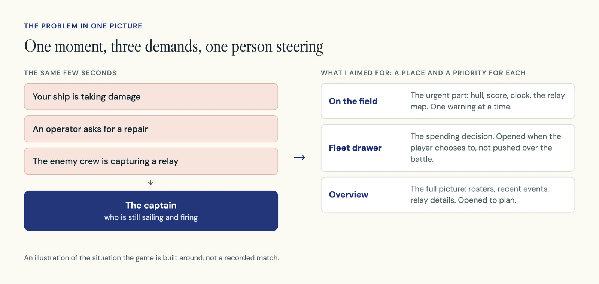
02 How it works
Two crews of three, eight relays and a ten-minute clock
Each crew has one captain and two operators. Everyone sails and fights. The captain has one more job: spending the crew's shared supplies. Operators ask for an upgrade or a repair instead of buying it.
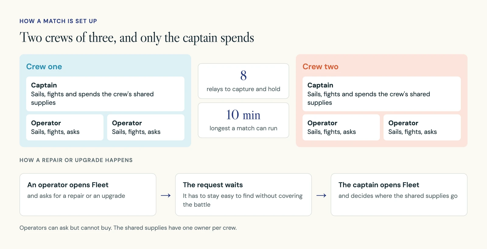
A player chooses a station, then either plays solo, with AI crew in the empty seats, or assembles a crew in a room. Once deployed, the job is to read the battle and coordinate.
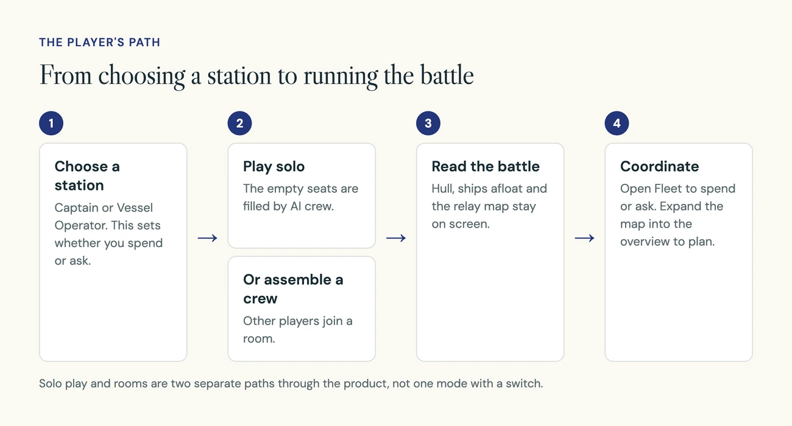
03 Decision 1
Who can spend is settled before the match starts
What you see: before deploying, you pick a station. Captain and Vessel Operator sit side by side as two cards, each with one line on what it does.
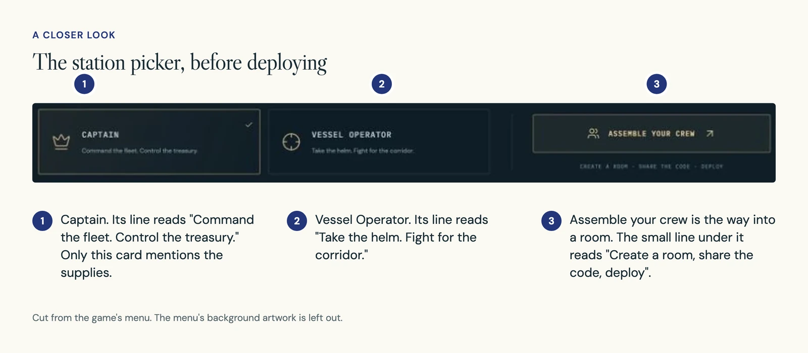
Why: a shared purse needs one person who decides. If the roles are clear before the battle, an operator understands why they can ask for something but cannot buy it.
In the build: controls depend on the station. Both roles open the same Fleet drawer. A captain uses it to spend; an operator uses it to ask.
04 Decision 2
What you need every second stays on the sea
What you see: a revision I called Clear Deck. It keeps a small set of things on screen: score, clock, the balance of the relays, ships still afloat, your hull and a corner map. Spending and detail moved off the field.
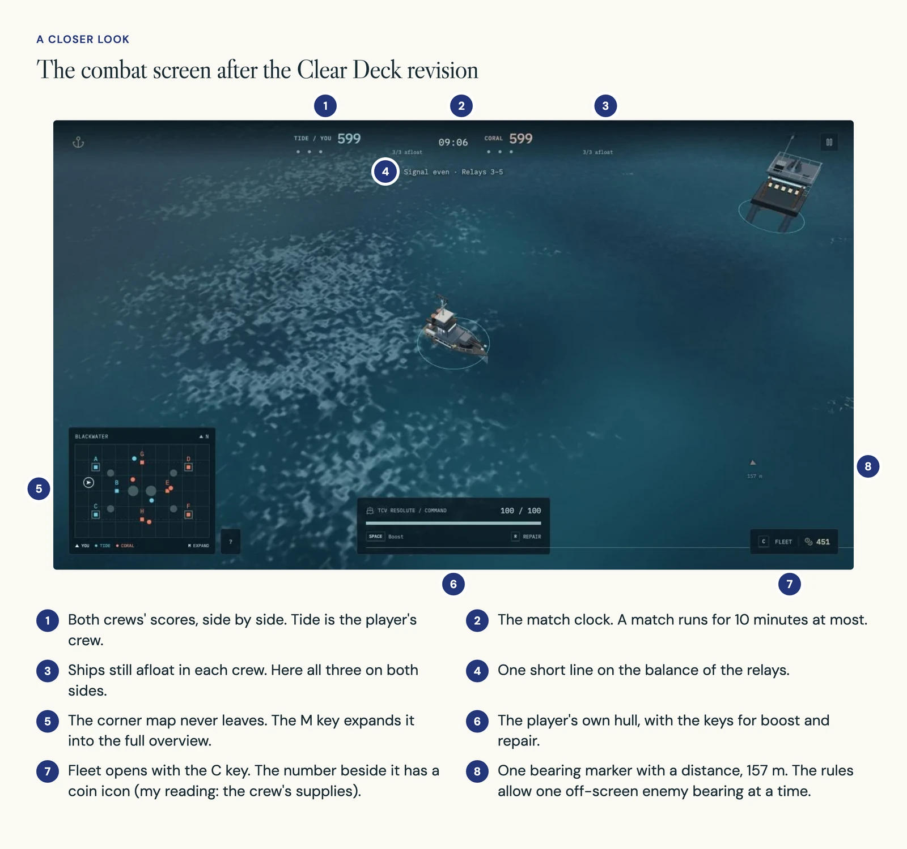
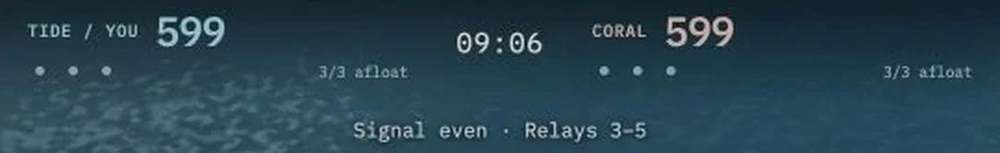
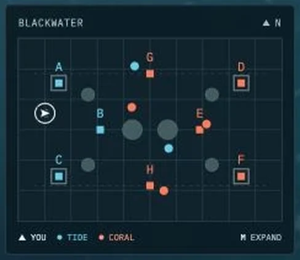
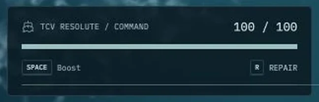
In the build: information lives in three places. The field holds what you need every second. The Fleet drawer, opened with C, holds spending and requests. The expanded overview, opened with M, holds crew rosters, recent events and relay details.
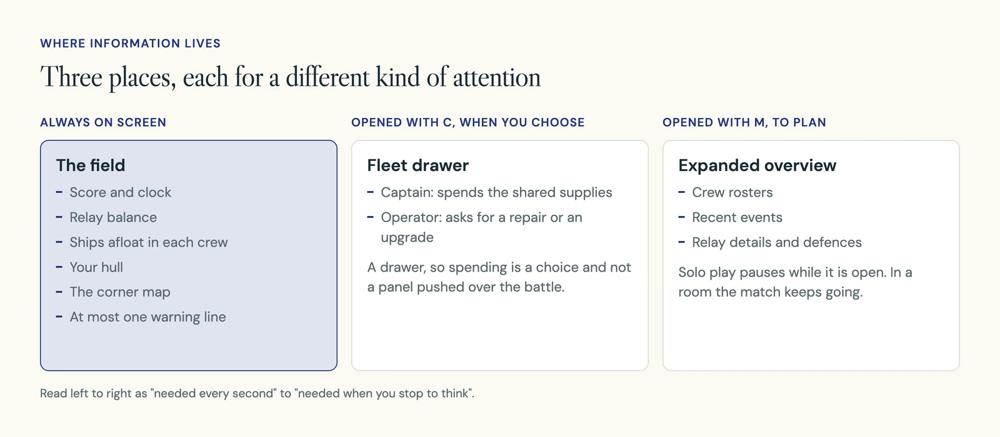
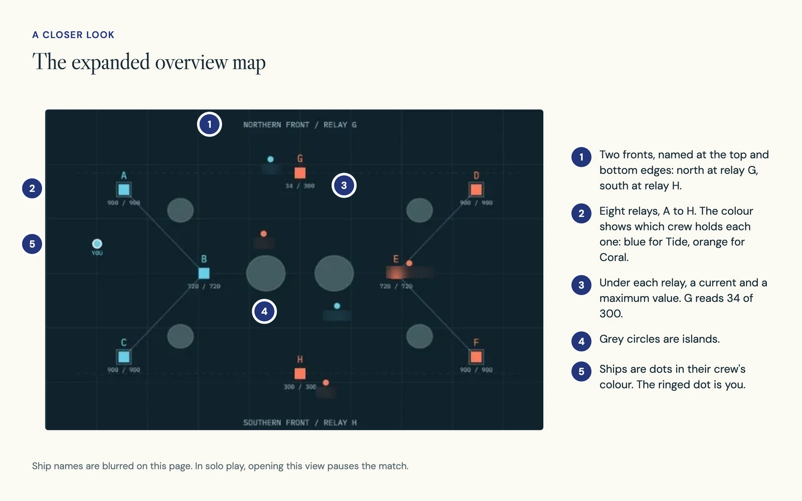
The overview behaves differently by mode. In solo play it pauses the match. In a room, the match keeps going while it is open.
05 Decision 3
Warnings share a small budget instead of piling up
What you see: at most one marker points to an enemy off screen. One line of warning text is kept for three cases: critical hull, safe healing or a home relay in danger. Your own hits show at most two damage numbers. Routine radio stays out of combat.
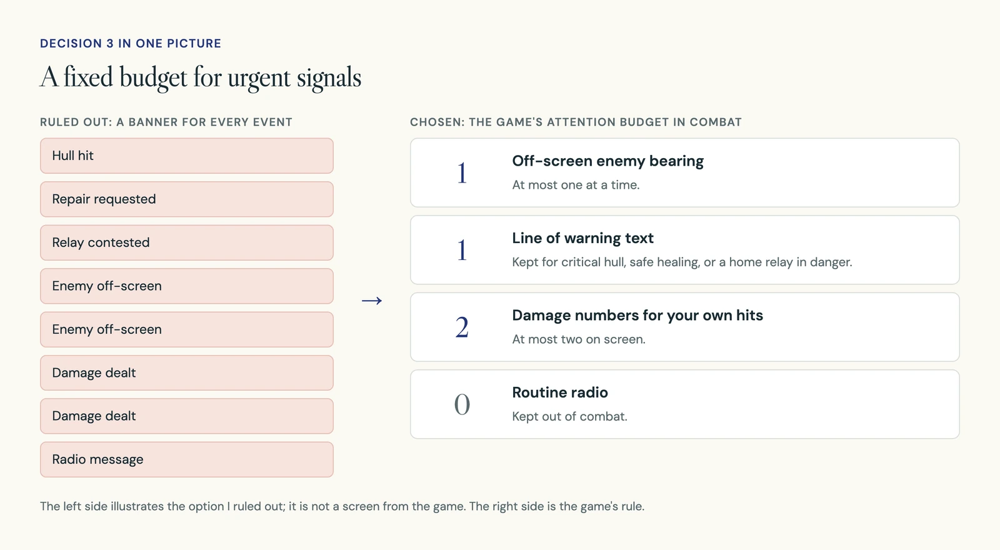
Why: an alert is useful only if it helps a player choose an action. With a fixed order of importance, a hit you take or a low hull is easier to notice among effects, ships and objectives.
In the build: the rules that read the battle and decide which signal wins sit together in the game's awareness rules. They cover the single off-screen bearing, the warning priority and the damage feedback.
06 The build
Two ways into one arena, with the online limits stated
Solo play and rooms lead to the same arena, but they are built differently. Solo play fills empty seats with AI crew. A room depends on one player, the host, keeping the page open, with other players joining over direct peer connections.
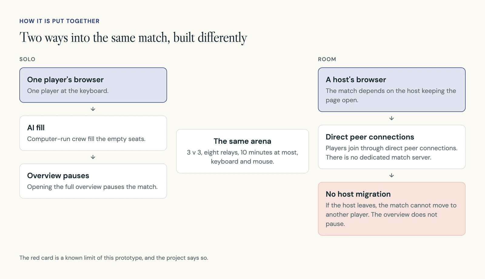
| Part | What it is |
|---|---|
| Game | A browser game in JavaScript and CSS, played with keyboard and mouse |
| Solo play | AI crew fill the empty seats. The overview pauses the match |
| Rooms | A host plus direct peer connections. No dedicated match service |
| Battle rules | Awareness rules for role controls, alert priority, damage feedback and the single off-screen bearing |
| Checks | Rule checks and seeded scenarios, which replay set situations |
The checks show that the rules do what they say. They do not show that the game is balanced, or that human crews can use it.
Online play is where most of the open questions are.
| Area | Where it stands |
|---|---|
| Host leaves | There is no host migration. The game still needs an honest message for when a host leaves |
| Joining | Invitations, entering a room and changing roles still need to be checked |
| Dropped players | A guest disconnecting has not been checked yet |
| Networks | Restrictive networks that block peer connections have not been checked yet |
07 Where it stands
A playable prototype that no human crew has tested
OhCaptain is playable in the browser with keyboard and mouse. It supports solo matches with AI crew and crew rooms, in one capture-and-hold arena. The screens on this page are from the actual game, in solo play.
There is no hosted version to link to. The project is on GitHub.
- No playtests with human crews have been run.
- I have no player numbers or feedback to share.
- Balance has not been tested.
08 What is next
Put two crews in front of it without coaching
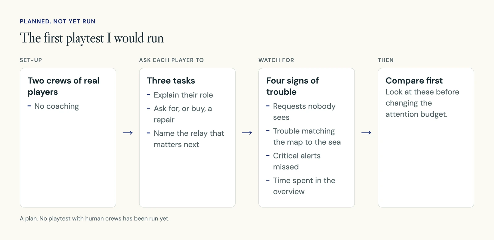
- Ask each player to explain their role, ask for or buy a repair, and name the relay that matters next.
- Watch for missed requests, trouble matching the map to the sea, critical alerts nobody notices, and time spent in the overview. Compare these before changing the attention budget.
- Check room invitations and entry, role changes, a guest dropping out, restrictive networks, and a clear message when the host leaves.
09 What I learned
A crew can coordinate when the next action has an owner
Information needs a place and a priority. A hull warning, a spending choice and a full fleet overview should not all ask for attention in the same way.
Most of my decisions here were about what to leave off the screen. Whether I left off the right things is something only a real crew can show me, which is why the playtest comes before any more changes.
Keep the action close to the pointer.